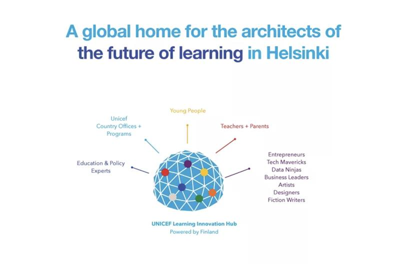
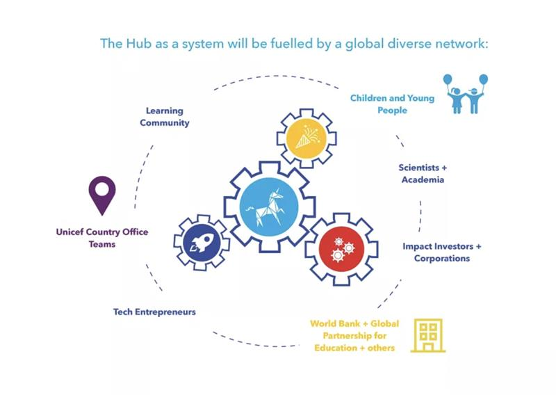

ON SOURCE: UNICEF GLOBAL LEARNING INNOVATION HUB
UNICEF Global Learning Innovation Hub
A home for the architects of the future of learning
The global learning crisis has deeply intensified, with 70 per cent of 10-year-olds in low and middle-income countries unable to read a simple statement. At the same time, the world is undergoing a digital transformation marked by an exponential surge in the availability and diversity of educational technology, or edtech, and a surging demand for quality digital learning tools. This presents a once-in-a-generation opportunity to reimagine how children learn.
With this opportunity comes the duty to ensure universal and equitable access to safe digital learning tools that improve learning outcomes for every child, everywhere, while bridging the learning digital divide.
Based in Helsinki, Finland, the UNICEF Global Learning Innovation Hub aims to accelerateequitable access to world-class digital learning solutionsandconvenea global community of visionaries to build the future of learning. The Hub is driven by a dual mission: to harness innovations to address the learning crisis and to shape the future of learning now.

The Hub actively seeks “tomorrow’s innovations” to challenge the limits of what is possible today by delving into alternative learning paths spanning early childhood, foundational literacy and numeracy, Science, Technology, Engineering, Arts, Mathematics (STEAM) education, and mastering skills essential for the future.
This work is grounded in UNICEF’s primary strategic objective for education programmes - to enhance child developmental outcomes and foster skills and learning achievements for every learner. The Hub is testing and scaling frontier technologies that will redefine learning globally, working in collaboration with UNICEF country and regional offices and a global network of public and private sector partners, academic institutions, leaders in the tech and edtech industry, and various other stakeholders.
Aligned with the UNICEF Reimagine Education Initiativeand complementing UNICEF digital initiatives such as Giga and the Learning Passport, the Hub is dedicated to accelerating the digital transformation of education. Beyond this, it aspires to create a secure space for innovative thinking, thought-provoking research, new radical collaborations, and alternative pathways to scale digital learning tools to reach all children - altogether exploring new learning journeys, pedagogical approaches, spaces, and artefacts to unleash the full potential of every child, regardless of their location, abilities, or background.
The Future of Learning is NOW.

ON SOURCE: UNICEF GLOBAL LEARNING INNOVATION HUB